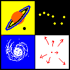

Apps zur Mathematik
Walter Fendt
|
Apps zur MathematikWalter Fendt |
Deutsche Version |
www.walter-fendt.de/html5/mde | (HTML5, 104 Apps, 2023-08-10) | Download (2023-08-10) |
 Česky |
 English |
 Español |
 Français |
Italiano |
Nederlands |
 Português |
 Thai |
Türkmençe |
| Zahlenpyramide | 1.5.2023 - 2.5.2023 |
| Abakus | 6.8.2023 - 7.8.2023 |
| Schriftliches Rechnen (Grundrechenarten) | 24.8.1998 - 18.10.2017 |
| Rechnen ohne Rundungsfehler | 22.6.2020 - 20.7.2020 |
| Umrechnung von Einheiten | 25.3.2001 - 18.10.2017 |
| Primyphos - ein Spiel zur Primfaktorzerlegung | 18.10.1998 - 18.10.2017 |
| Primzahlentabelle bis 1 000 000 000 000 | 17.10.2003 - 18.10.2017 |
| Online-Rechner Algebra | 17.8.2020 |
| Online-Rechner Restklassen | 21.7.2022 |
| Online-Rechner Galois-Felder | 5.8.2022 |
| Online-Rechner Legendre-, Jacobi- und Kronecker-Symbol | 4.7.2023 |
| Winkel an parallelen Geraden | 21.3.2006 - 2.4.2018 |
| Innenwinkelsumme eines Dreiecks | 11.6.1998 - 2.4.2018 |
| Einfache geometrische Abbildungen | 19.6.1999 - 18.10.2017 |
| Thaleskreis | 17.6.1998 - 18.10.2017 |
| Besondere Linien und Kreise im Dreieck | 25.10.1998 - 18.10.2017 |
| Umkreis eines Dreiecks | 25.11.1997 - 26.3.2020 |
| Inkreis eines Dreiecks | 4.11.1998 - 29.3.2020 |
| Dreiecks-Labor (44 Apps) | 28.10.2004 - 17.07.2023 |
| Sehnenviereck | 1.11.1997 - 18.10.2017 |
| Tangentenviereck | 1.10.2000 - 18.10.2017 |
| Regelmäßige Vielecke (2 Apps) | 26.4.2018 - 2.12.2022 |
| Winkel am Kreis | 1.11.1997 - 18.10.2017 |
| Strahlensatz | 27.4.2000 - 18.10.2017 |
| Satz des Pythagoras | 19.2.2001 - 30.7.2023 |
| Kathetensatz und Satz des Pythagoras | 1.11.1997 - 30.7.2023 |
| Zwillingskreise des Archimedes | 11.4.2000 - 1.8.2023 |
| Kreisspiegelung | 23.3.2017 - 18.10.2017 |
| Berührkreise | 4.10.2017 - 18.10.2017 |
| Problem des Apollonios (10 Apps) | 27.12.2008 - 19.10.2017 |
| Pappos-Kette | 4.3.2005 - 18.10.2017 |
| Berechnung von Kreisumfang und Kreisfläche | 22.11.2002 - 3.2.2021 |
| Platonische Körper | 8.6.1998 - 18.10.2017 |
| Kugelvolumen (Prinzip von Cavalieri) | 4.9.2000 - 18.10.2017 |
| Sinus, Cosinus und Tangens eines Winkels | 25.12.1997 - 18.10.2017 |
| Kugeldreieck | 6.2.1999 - 1.8.2023 |
| Abstand zweier Punkte auf einer Kugeloberfläche | 16.1.2021 - 2.8.2023 |
| Komponenten eines Vektors | 22.7.1998 - 31.7.2023 |
| Vektorgleichung einer Geraden im dreidimensionalen Raum | 16.9.1999 - 31.7.2023 |
| Sekanten- und Tangentensteigung | 22.2.1998 - 18.10.2017 |
| 1. und 2. Ableitungsfunktion | 10.10.1999 - 18.10.2017 |
| Tangenten von Funktionsgraphen | 6.9.2017 - 18.10.2017 |
| Krümmungskreise von Funktionsgraphen | 6.9.2017 - 18.10.2017 |
| Epizykloiden und Hypozykloiden | 23.10.2017 - 27.7.2023 |
| Gerade Strophoide | 9.11.2020 - 31.7.2023 |
| Elliptische Kurven | 19.11.2020 |
| Rechnen mit komplexen Zahlen | 4.12.1999 - 18.10.2017 |
| Online-Rechner Aussagenlogik | 18.8.2021 - 19.8.2021 |
| Milchkannenrätsel | 2.9.1998 - 18.10.2017 |
| Die Türme von Hanoi | 6.2.2022 - 7.2.2022 |
| 15-Puzzle | 24.7.2023 |
 |
 |  |
 |
| Physik-Apps | Astronomie-Apps | Homepage |